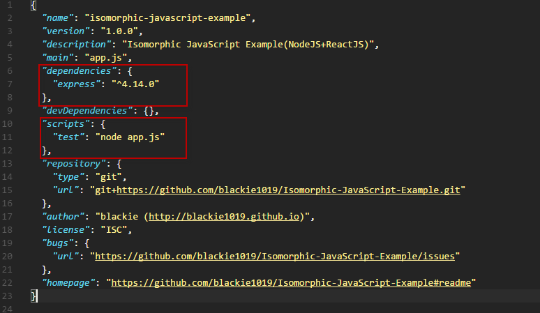

Reuse，這是developer最喜歡但也最難做到的部分，往往在一些限制與挑戰下我們會遇到無法重用我們既有的經驗與能力。但如果有機會讓我們再選一次，我們一定會先問有可以參考或是重用的嗎? Isomorphic正是強調這樣精神的一個架構
Isomorphic JavaScript apps are JavaScript applications that can run both client-side and server-side.
The backend and frontend share the same code.
Reuse，這是developer最喜歡但也最難做到的部分，往往在一些限制與挑戰下我們會遇到無法重用我們既有的經驗與能力。但如果有機會讓我們再選一次，我們一定會先問有可以參考或是重用的嗎? Isomorphic正是強調這樣精神的一個架構。 此外，Isomorphism的好處有:
- Faster Perceived Load Times + Better Global UX
- Search Engine Indexability
- Easier Code Maintenance
使用這樣架構最有名的案例則是Airbnb本身的產品。
How to make a web application
在看開始新的架構時我們先回頭看一下一個網頁應用程式不能或缺的三元素為:
- HTML
- CSS
- JavaScript
如果是動態網頁需要一些資料處理的能力大就需要再結合後端的程式來幫我們，所以原本的架構就會疊加一個後端的語言(C# or Java or PHP or Ruby or Python or Go..etc)。但如果稍微大型的網頁應用程式在開發上多少都會使用網頁框架來加速與統一開發，如Xuenn使用的.Net MVC或Web form，而這樣又帶入了一個頁面語言Razer或是Web page, 結果則是變成下面
如先前說的Reuse實務上太難達到了，但如果能透過JavaScript幫忙統一後端開發與頁面使用的開發語言，這樣就可以幫我們重新使用我們已經會的技術與經驗來替換掉C#與Razer/Web pages，可以讓開發少點重複但不同語言的學習，多花時間用同一語言與經驗處理實際且進階的應用。 而架構也會變成如此:
我們有了可以Shared的Library，縮減Frontend與Backend開發重複功能的時間也避免了重複犯錯的機會，而Back-end這邊則是可以沿用JavaScript這個語言，用同一個開發語言除了減少學習上的分歧也代表我們能沿用這個語言大部分的解決方案(如最佳化, 測試與部屬等等)，而這也讓我們回歸到最基本的網頁應用程式的三個基礎元素。
接下來我們就從架構到實作一步一步的應用NodeJS與ReactJS來幫我們做出第一個Isomorphic web application.
Technical Overview
ReactJS
ReactJS是Facebook打造的framework，專注於解決view的問題，透過Virtual DOM 與單一流向的方式來加速與減少前端開發的問題。以往我們所知用更改一個DOM的Element來呈現畫面改變的這個方法在大型頻繁更新的網站上面是非常可怕的效能瓶頸。可以看到的是ReactJS要解決的是Web開發上面UI呈現的問題，隨者網頁功能越多與越多人互相使用與交流，FB遇到越來越多需要在同一個頁面即時更新的情況，ReactJS就是因此而誕生的一個Framework．
整理以下有幾個的優點:
- 模組化的設計：提高了程式碼的複用性、並且很好地隔離了不同組件的程式碼
- 提倡單向資料流：無論是Flux或Redux都可將資料與業務邏輯很好的分離
- 聲明式風格：可讀性高，可以很直覺地透過 Render() 函數的內容來想像頁面是如何被組成的
- 讓 Server-Side Rendering 這件事變成可能：Isomorphic Web Design, SEO
- React Native 統一了行動開發，同時保有原生 APP 的體驗
React是一個以JavaScript為主打照的語言，而這也產生一種為JSX的開發語言。當然有人對JavaScript裡面包含HTML這種寫法是非常感冒的，這邊就是要稍微遷就一下了。
提醒一下JSX只是一種選項，並非開發ReactJS一定要用JSX。
NodeJS
NodeJS本身透過HTTP模組已經可以簡單地去做網頁相關處理，但對於一個較為複雜的網站還是會建議額外加裝網頁應用程式模組，減少重複的開發。這邊我們使用NodeJS上面最常使用的Express作為我們的開發的框架，幫我們架設起第一個NodeJS網站。 如果考慮使用ES6/7，也推薦KOA這個框架。
Express-react-views
Jade模組是Express.js預設的模版引擎(Template Engine)。Jade最大的特點是語法非常的優雅，這是優點同時也是缺點。因為學習曲線較陡（跟HTML差挺多的），而且難以與其他人（像只懂HTML的設計人員）溝通。所以很多人喜歡把Jade換成更接近HTML的模版引擎，這邊我們會改用React來統一所有跟View相關的使用。
這邊我們使用Express-react-views 作為範例。
沒錯，減少Server Side還要學習Jade語言而直接使用React，這也我們其中一個Isomorphic的地方。
Webpack
Webpack 是一個模組打包工具（module bundler），主要功能：
- 將 CSS、圖片與其他資源打包
- 打包之前預處理（Less、CoffeeScript、JSX、ES6 等）的檔案
- 依 entry 文件不同，把 .js 分拆為多個 .js 檔案
- 支援熱模組(Hot Module)做即時動態更新，減少開發時繁複的建置時間與步驟
- 整合豐富的 loader 可以使用
- 整合grunt, gulp, bower, karma等前端套件工具
Babel
The compiler for writing next generation JavaScript
這就是Babel主要的使命，而這邊我們使用它來幫我們達到前端開發模組化的功能，因為NodeJS本身已經有模組化的架構了，但ReactJS則需要透過外部套件來幫助它做到這點。而它所帶來的ECMA6的語言特性與其他好處不在此篇多做說明。
Play by Steps
在開始前我們先簡單的描述一下我們要做出來的成品所需要符合的需求,
- 後端:網頁title需顯示該網站建立的時間
- 前端:頁面顯示時間變化
- 兩者時間格式必須相同
懶人DEMO
- 安裝套件 : npm install
- 啟動node : npm start
- 打開瀏覽器瀏覽 : http://localhost:9527
Setup教學
以下指令如果在Windows環境下操作，建議執行在Git BASH上面，避免Windows不支援
首先先到NodeJS官網下載並安裝，安裝完後在Command Line確認一下版本
$ node -v

如果看到有正確的回應版本即代表安裝成功。 接者我們就透過指令並依序輸入資訊(或按enter帶入預設即可)後建立我們的package.json檔案
$ npm init
一鍵安裝指令如下
$ npm install --save express-react-views react react-dom express
或是我們一步步解說:
接著用NPM來安裝Express模組(安裝 Node 模組時，如果指定了 –save 選項，則會將這些模組新增至 package.json 檔中的 dependencies 清單。之後，當您在該目錄中執行 npm install 時，就會自動安裝相依關係清單中的模組)。
$ npm install express --save
我們這邊要修改一下scripts裡面的test，讓我們執行test指令的時候可以幫我們成功運行NodeJS指定的主程式
"test": "node app.js"

接著我們新增一個app.js的檔案作為我們預設的主程式，在這邊我們先簡單用3000 port來起一個Express網頁程式並顯示Hello World!
var express = require('express');
var app = express();
app.get('/', function (req, res) {
res.send('Hello World!');
});
app.listen(3000, function () {
console.log('Example app listening on port 3000!');
});
然後我們回到Command Line輸入透過前面設定好的test指令將我們的Express運行起來
$ npm test
最後我們安裝ReactJS套件，這邊要安裝react與react-dom
$ npm install --save react react-dom
然後我們新增一個index.html並放入以下內容後儲存，這邊我們可以直接透過瀏覽器先檢視一下呈現是否如預期
<!DOCTYPE html>
<html lang="en">
<head>
<title>React Test</title>
<meta charset="UTF-8">
<script src="https://npmcdn.com/react@15.3.0/dist/react.min.js"></script>
<script src="https://npmcdn.com/react-dom@15.3.0/dist/react-dom.min.js"></script>
<script src="https://npmcdn.com/babel-core@5.8.38/browser.min.js"></script>
</head>
<body>
<div id="app"></div>
<script>
var Demo = React.createClass({
displayName: "HelloMessage",
render: function() {
return React.createElement("div", null, "Hello, world!I am a React App ", null);
}
}),
mountNode = document.getElementById('app');
React.render(React.createElement(Demo, null), mountNode);
</script>
</body>
</html>
目前我們已經成功的把Express與ReactJS分別成功執行了，接下我們就來調整一下把他們合為一體吧。
首先我們稍微調整一下我們目錄結構，讓它們可以分別註冊在不同的資料夾內自動繫結到我們的專案中，請直接參考Express的Express application generator，以下為建立出來的結構。
接著安裝Express-react-views套件並修改一下原本的app.js，將Express設定ReactJS當作加入的view engines修改內容如下:
$ npm install --save Express-react-views
在原本的app.js中移除Jade並加入react為預設View Engine
app.set('view engine', 'jsx');
app.engine('jsx', require('express-react-views').createEngine());
將我們剛剛寫的index.html寫成jsx放到views下面
var React = require('react');
var AppComponent = React.createClass({
render: function() {
return (
<html>
<head>
<meta charSet="UTF-8"/>
<title>React Test</title>
<script src="https://npmcdn.com/react@15.3.0/dist/react.min.js"></script>
<script src="https://npmcdn.com/react-dom@15.3.0/dist/react-dom.min.js"></script>
<script src="https://npmcdn.com/babel-core@5.8.38/browser.min.js"></script>
<link src="stylesheets/style.css" />
</head>
<body>
<div id="app">
</div>
<script type="text/babel" src="javascripts/demo.jsx"></script>
</body>
</html>
);
}
});
module.exports = AppComponent;
接著我們再來組合先前的HelloMessage component轉換成jsx格式，並將原本的內容貼入後做下面修改後存至demo.jsx:
var Demo = React.createClass({
render: function() {
return (
<div>
Hello, world!I am a React App.
</div>
);
}
});
ReactDOM.render(<Demo />, document.getElementById('app'));
檢視一下我們的Package.json最後的樣子
開發需求前我們重新檢視一下目前的專案結構
到這邊，我們已經從無到有的建立了專案的底層，接下來就讓我們來開發這次的需求吧
Backend
這邊只有一個需求是將目前的時間顯示到html的title裡面，這邊我們會使用javascripts目錄裡面的date-helper.js來幫我們。
'use strict';
var helper = {};
helper.getShortDatetime = function() {
var datetime = new Date();
return [datetime.getFullYear(),
(datetime.getMonth() + 1),
datetime.getDate()
].join('/') + ' ' + [
datetime.getHours(),
datetime.getMinutes(),
datetime.getSeconds()
].join(':');
}
module.exports = helper;
將寫的元件引入直接使用getShortDatetime來顯示在title後面，修改index.jsx內容如下:
var React = require('react');
var dateHelper = require('../public/javascripts/date-helper');
var IndexView = React.createClass({
render: function() {
return (
<html>
<head>
<meta charSet="UTF-8"/>
<title>{dateHelper.getShortDatetime()} </title>
<script src="https://npmcdn.com/react@15.3.0/dist/react.min.js"></script>
<script src="https://npmcdn.com/react-dom@15.3.0/dist/react-dom.min.js"></script>
<script src="https://npmcdn.com/babel-core@5.8.38/browser.min.js"></script>
<link src="stylesheets/style.css" />
</head>
<body>
<div id="app">
</div>
<script type="text/babel" src="javascripts/date-helper.js"></script>
<script type="text/babel" src="javascripts/demo.jsx"></script>
</body>
</html>
);
}
});
module.exports = IndexView;
接著再次將網站運行就可以發現title已經被置換了
Frontend
這邊我們同樣將date-helper.js載入後在demo.jsx頁面上顯示我們的時間，內容如下:
var dateHelper = require('./date-helper.js');
var Demo = React.createClass({
getInitialState: function() {
return {
dateTime : dateHelper.getShortDatetime()
};
},
render: function() {
return (
<div>
<p>
Hello, world!I am a React App.
</p>
<p>
Time : {this.state.dateTime}
</p>
</div>
);
}
});
ReactDOM.render(<Demo />, document.getElementById('app'));
這次卻出現了JS Error

主要是因為模組化是NodeJS預先就有支援的架構，但ReactJS如果要支援這樣的架構需要透過其他方式達成。這邊示範用Webpack來達成。
加入Webpack與Babel
安装 Webpack：
npm install -g webpack
Webpack 會載入 webpack.config.js 的設定文件來執行。 如果要編譯 JSX，則需安装對應的 loader，這邊我們使用babel-loader與react-hot-loader:
npm install babel-core babel-loader babel-preset-es2015 babel-preset-stage-0 babel-preset-react react-hot-loader --save-dev
新增一份 webpack.config.js ，並將 loaders 指定 babel-loader 編譯副檔名為 .js 或者 .jsx 的檔案，這樣你就可以在這兩種類型的文件中自由使用 JSX 和 ES6 了(這邊避免脫離主題暫時先不講ES6)。
var path = require('path');
module.exports = {
entry: './src/entry.js',
output: {
path: path.join(__dirname, '/public/javascripts'),
filename: 'bundle.js'
},
resolve: {
extensions: ['', '.js', '.jsx']
},
module: {
loaders: [
{
test: /\.js|jsx$/,
exclude: /(node_modules)/,
loaders: [
'react-hot',
'babel?presets[]=stage-0,presets[]=react,presets[]=es2015'
]
}
]
}
}
接者我們調整一下我們的demo.jsx與date-help.js的路徑，並修改一下載入的位置
entry.js則是我們希望webpack載入的入口，這邊我們可以開始加入我們的套件讓他做載入
require('react');
require('react-dom');
require('./components/demo.jsx');
require('./helper/date-helper.js');
設定完成後可以執行webpack看一下是否正確產出bundle.js到指定目錄
webpack

或是監聽編譯指令，動態載入編譯來加速開發
webpack -d --watch

當編譯成功後我們在使用npm start來啟動我們的網頁看一下畫面

因為我們這邊已經將frontend所有js/jsx打包成一個bundle.js，所以我們也可以將原本index.jsx所載入的套件移除了
var React = require('react');
var dateHelper = require('../src/helper/date-helper');
var IndexView = React.createClass({
render: function() {
return (
<html>
<head>
<meta charSet="UTF-8"/>
<title>{dateHelper.getShortDatetime()} </title>
<link src="stylesheets/style.css" />
</head>
<body>
<div id="app">
</div>
<script type="text/babel" src="javascripts/bundle.js"></script>
</body>
</html>
);
}
});
module.exports = IndexView;
Updated On The Fly
這次我們要加入ReactJs的更新事件，讓時間動態在頁面更新。內容如下:
var React = require('react');
var ReactDOM = require('react-dom');
var dateHelper = require('../helper/date-helper.js');
var Demo = React.createClass({
getInitialState: function() {
return {
dateTime : dateHelper.getShortDatetime()
};
},
tick: function() {
console.log('test');
this.setState({dateTime : dateHelper.getShortDatetime()});
},
componentDidMount: function() {
this.interval = setInterval(this.tick, 1000);
},
componentWillUnmount: function() {
clearInterval(this.interval);
},
render: function() {
return (
<div>
<p>
Hello, world!I am a React App.
</p>
<p>
Time : {this.state.dateTime}
</p>
</div>
);
}
});
ReactDOM.render(
最後我們把我們的webpack整合到npm start指令裡面，稍微修改一下package.json如下:
"scripts": {
"start": "webpack && node ./bin/www"
}
End
過程當中我們只運用了兩種語言HTML+JavaScript幫我們完成所有的功能，而其中我們學習如何使用Express與ReactJS這兩個框架以及運用統一的模組化方法Webpack+Babel協助我們開發，而這些都只專注在使用一種語言 - JavaScript。
Isomorphic JavaScript VS Universal JavaScript
使用同一個開發語言做到跨類型的應用程式開發也是Universal JavaScript的核心精神。
不同於Isomorphic JavaScript所強調網頁開發前後端的共構部分可以抽出來被重複使用，Universal JavaScript希望除了網頁應用程式之外，手機或是桌面應用程式是否也可以應用同一個語言做開發，減少跨語言的障礙並且加速開發。
而JavaScript也同時能達到這兩個架構與精神，有興趣的朋友除了瞭解本篇的NodeJS與ReactJS外以下提供不同情境的整理了幾個Framework可以參考:
For Mobile Application(Android, iOS)
- React Native
- Learn once, write Web and mobile apps with React
- Built on React Native: Facebook(iOS, Android), Facebook Ads Manager(iOS, Android), QQ(Android), CBS Sports Franchise Football(Android)…etc
For Disktop Application(Windows, Mac, Linux)
- Electron
- Ship more with less code, Build apps for any device, Integrate technologies you already use
- Built on Electron: Atom, Slack, VS Code, Kitematic, Postman…etc
是的，跟其他同類型的framework相比，從上面幾個開發出來的Application看來這些技術不是只用在demo或是POC而已!
如果對於React Native有興趣可以參考最近網友分享的這篇文章
想一步步把ReactJS學好的朋友可以關注從零開始學 ReactJS（ReactJS 101），作者群之後會陸續從開發環境到開發流程都一步步地帶你學習。
Next Steps

Isomorphic JavaScript的架構則沿用了這樣的精神幫我們整合前後端開發把可以共用的程式重用來達到Do less but get more(=>多點穩定+少點線上支援+早點回家).
這邊也推薦一個台灣Nodejs好手自己寫的isomorphic框架給大家，Lantern 專案：快速打造屬於自己的 Isomorphic 網站服務
如果你的專案是用Angular2開發的也別擔心，這邊也有一個官方結合NodeJS或Asp.net Core的類Isomophic框架可以參考，Universal Angular 2.
在現代網頁應用程式開發裡，JavaScript的重要性越來越高了。從一開始的腳本語言讓外人搞不清楚與Java的差別，而後幫我們處理簡單的網頁呈現的邏輯與簡單的操作跑馬燈效果或是畫面驗證等邏輯，經過了jQuery的興起讓我們知道原來光靠JavaScript我們就能幫網頁做到這麼多效果與彈性，而到2009年NodeJS的出現後有不少的企業將他們的網站的後端服務改用JavaScript來取代PHP, Python, Ruby等Interpreted language為了達到同一個開發語言來加速應用，加上Angular與React等front-end framework的出現讓我們更有方法的在開發應用程式。
Isomorphic 一直是 Node.js 開發者的夢想，如果有一個全新的專案需要做網頁應用程式且希望用JavaScript當作主要的開發語言的話不妨就試試看這樣的架構吧!